선물을 고르는 과정의 부담
가격과 카테고리를 오가며 탐색해야 해, 원하는 조건의 선물을 빠르게 좁히기 어려웠습니다.
PM 역기획 · UX Research · Prototyping · 2025
구매 경험에서 선물 경험으로
쿠팡 '선물하기'를 경쟁 서비스와 비교하고 사용자 리서치로 문제를 검증해, 선물 탐색부터 전달까지의 UX 개선안을 설계한 PM 역기획 프로젝트입니다. 실제 서비스에 적용된 개선이 아니라, 공개된 서비스를 분석해 개선 방향을 제안한 학습 프로젝트입니다.
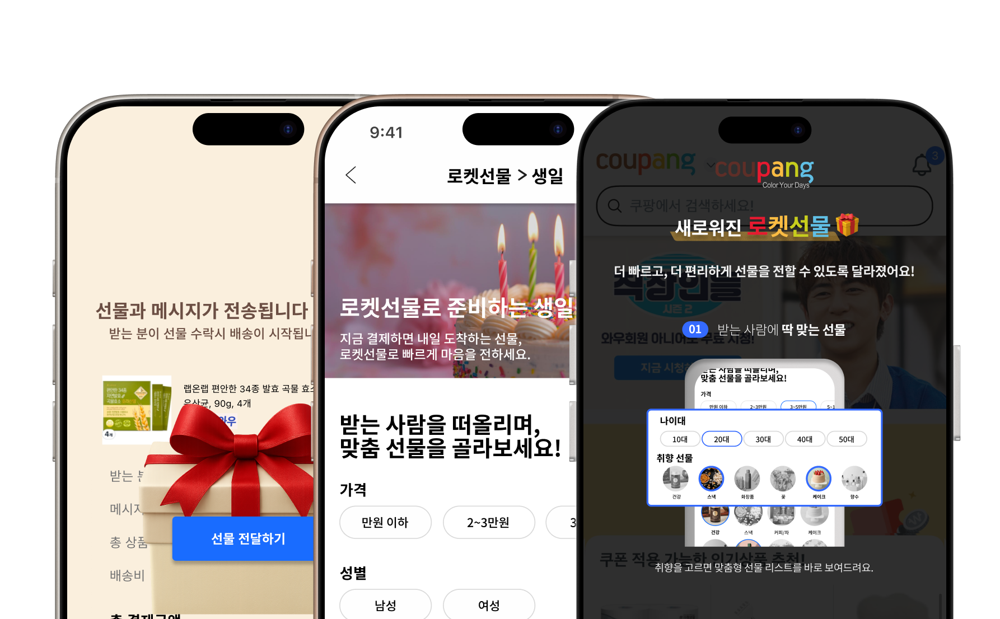
01Analysis
구매에 최적화된 경험이 선물하기에서도 충분한지 살펴봤습니다
쿠팡은 상품 탐색부터 결제, 빠른 배송까지 구매를 빠르게 완료하는 경험에 강점이 있습니다. 하지만 선물하기는 상품을 구매하는 것뿐 아니라, 상대에게 맞는 상품을 고르고 마음을 담아 전달하는 과정까지 포함합니다.
그래서 경쟁 서비스와 쿠팡의 사용자 여정을 비교하며, 구매에 최적화된 경험이 선물하기에서도 충분한지 살펴봤습니다.
카카오톡 선물하기를 중심으로 선물 탐색, 추천, 메시지, 배송 경험을 비교하고, 다른 커머스 서비스의 선물 UX도 함께 살펴봤습니다.
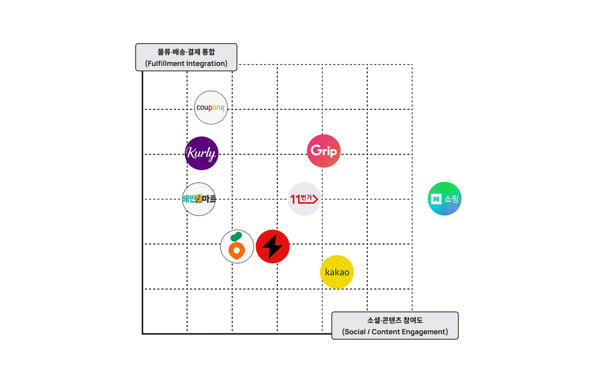
쿠팡은 물류·배송 경쟁력은 높았지만, 카카오와 비교했을 때 관계 기반의 선물 경험과 소셜 요소는 상대적으로 약했습니다.
상품 탐색부터 결제, 배송까지의 흐름을 따라 사용자의 행동·니즈· 감정을 정리하고, 각 단계에서 발생하는 Pain Point를 확인했습니다.
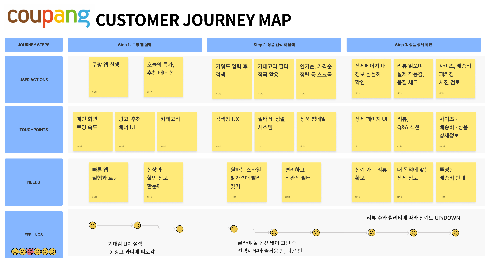
사용자 여정을 따라가며 탐색 과정의 부담, 선물 경험의 부족, 배송 과정의 불안이 반복되는 지점을 확인했습니다.
가격과 카테고리를 오가며 탐색해야 해, 원하는 조건의 선물을 빠르게 좁히기 어려웠습니다.
메시지·카드·추천 등 상대방을 고려할 수 있는 요소가 부족해 일반 구매와의 경험 차이가 크지 않았습니다.
배송지를 잘못 입력했을 때 수정 방법이 명확하지 않아 보내는 사용자에게 부담이 생길 수 있었습니다.
02Research
분석에서 발견한 문제를 가설로 정의하고 실제 사용 상황에서 검증했습니다
경쟁 서비스와 사용자 여정 분석만으로 문제를 확정하기보다, 실제 사용자도 같은 불편을 경험하는지 확인하고자 했습니다. 앞서 발견한 문제를 다섯 개의 가설로 구체화하고, 각 가설을 확인할 수 있는 상황형 Task와 후속 인터뷰를 설계했습니다.
테스트를 마친 뒤 결과를 해석하기보다, 어떤 신호가 관찰되면 가설을 참으로 판단할지 기준을 미리 정해두었습니다.
선물 과정의 몰입감 부족
감성 옵션 찾기 난항, 일반 구매와 동일 인식. 포장·메시지 등 감성 옵션을 30초 내 자발적으로 인지·활용하지 못하거나 "일반 주문 같다"는 발화가 나오면 참으로 판정.
개인화·추천 UX 미비
베스트·카테고리만 의존, 취향 반영 실패. 수신자 취향과 가격 제약으로 2분 내 합리적 후보를 선택하지 못하면 참으로 판정.
시각적·감성적 요소 부족
썸네일·연출에서 '선물스러움'을 낮게 인지. '선물스러움' 리커트 중앙값이 기준 이하이거나 "차이가 거의 없다"는 응답이 다수면 참으로 판정.
카테고리 중복·탐색 혼잡
필터·중복 카테고리로 길을 잃음. 조건 탐색이 3분을 초과하거나 되돌아가기·오선택이 2회 이상이면 참으로 판정.
배송지 오입력 시 발신자 수정 부담
조치 경로 미발견, 고객센터 의존. 발신자 화면에서 수정·재전송· 취소 경로를 90초 내 찾지 못하면 참으로 판정.
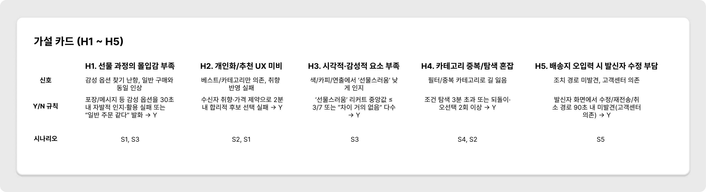
무엇을 보면 참이라고 판단할지 먼저 정해두면, 결과를 원하는 대로 읽는 일을 줄일 수 있다고 보았습니다.
단순히 기능에 대한 선호를 묻기보다, 사용자가 실제로 선물을 보내는 상황과 비슷한 조건에서 행동을 관찰했습니다.
선물 탐색
친구의 생일을 가정해 정해진 예산 안에서 선물할 상품 찾아보기
조건 기반 탐색
가격·카테고리 조건에 맞는 상품 찾아보기
선물 전달
포장이나 메시지 등 선물 관련 기능 활용해보기
예산 내 상품 선택
주어진 조건 안에서 선물할 상품 결정하기
배송지 문제 대응
배송지를 잘못 입력한 상황에서 수정·취소 방법 찾아보기
기능에 대한 선호보다 어디에서 망설이고, 되돌아가고, 예상과 다른 경험을 하는지를 확인하는 데 집중했습니다.
쿠팡을 이용해본 사용자 다섯 명을 대상으로 상황형 사용성 테스트를 진행하고, 각 Task가 끝난 뒤 행동의 이유와 기대했던 경험을 추가로 확인했습니다. 수행 과정에서는 망설임, 되돌아감, 기대와 실제 동작의 차이를 중심으로 관찰했습니다.
다섯 명은 사용성 문제를 발견하기에는 적정한 규모지만, 개선 효과를 수치로 말하기에는 부족한 표본입니다. 이 프로젝트에서는 문제가 실제로 존재하는지 확인하는 데 목적을 두었습니다.
| 참가자 | H1 | H2 | H3 | H4 | H5 |
|---|---|---|---|---|---|
| P1 | Y | Y | Y | Y | Y |
| P2 | Y | Y | Y | Y | Y |
| P3 | N | N | N | N | N |
| P4 | Y | Y | Y | Y | Y |
| P5 | N | Y | Y | Y | Y |
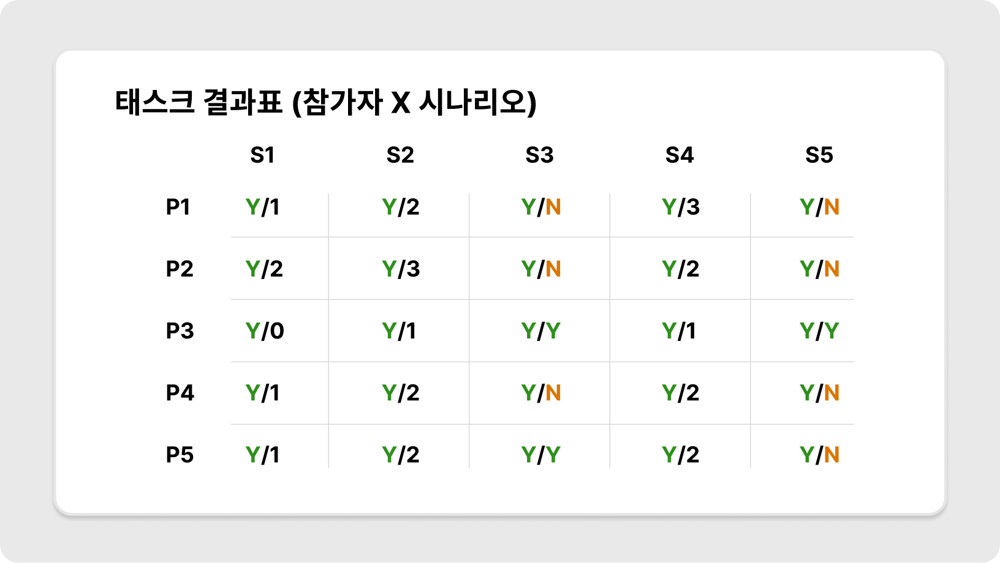
테스트 결과 탐색의 부담, 추천·개인화 부족, 선물 과정의 몰입감과 감성 요소, 배송지 수정 문제가 실제 사용 과정에서도 반복적으로 나타났습니다.
모든 의견을 그대로 개선안에 반영하기보다, 반복 빈도와 사용자 만족도에 미치는 영향을 기준으로 개선 우선순위를 정했습니다.
03Prioritization
검증된 문제를 모두 반영하기보다, 만족도와 필요 수준을 기준으로 개선 범위를 좁혔습니다
사용자 테스트에서 확인된 문제를 모두 동일하게 다루지 않고, 필수적으로 개선해야 할 요소와 만족도를 높이는 요소를 구분했습니다. 이를 위해 Kano Model로 기능과 경험 요소를 정리해 개선 우선순위를 구체화했습니다.
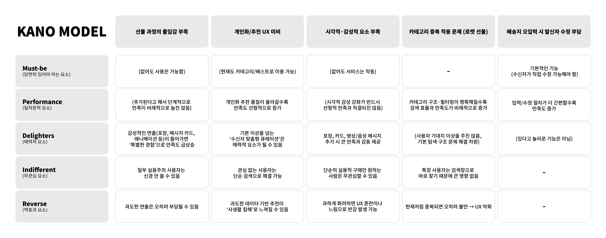
배송지 수정, 탐색 구조, 선물 과정의 명확성은 기본 사용성을 위해 우선 개선 대상으로 두고, 메시지·카드와 같은 감성 요소는 선물 경험의 만족도를 높이는 방향으로 반영했습니다.
가격·카테고리 중심의 탐색 구조를 정리하고, 조건에 맞는 상품을 빠르게 찾을 수 있도록 설계했습니다.
메시지·카드·선물 단계 안내를 강화해 일반 상품 구매와 다른 경험을 설계했습니다.
배송지 확인과 수정 경로를 명확하게 제공해 잘못 입력했을 때도 쉽게 대응할 수 있도록 설계했습니다.
기존 서비스의 구조를 As-Is로 정리한 뒤, 탐색·선물 전달·배송 과정에서 발생하던 마찰을 줄이는 방향으로 To-Be 구조를 설계했습니다.
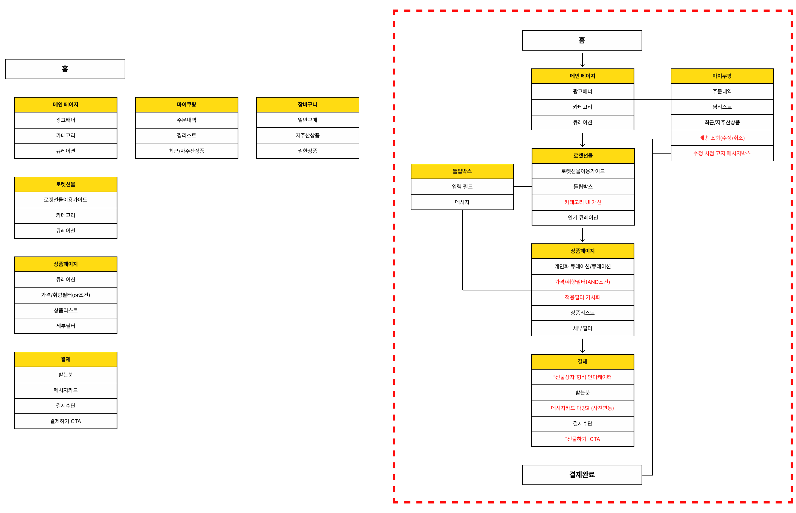
이후 개선된 정보 구조를 바탕으로 사용자가 선물 카테고리 진입부터 상품 탐색, 결제, 메시지 작성, 배송지 입력까지 자연스럽게 이어갈 수 있도록 전체 User Flow를 재구성했습니다.
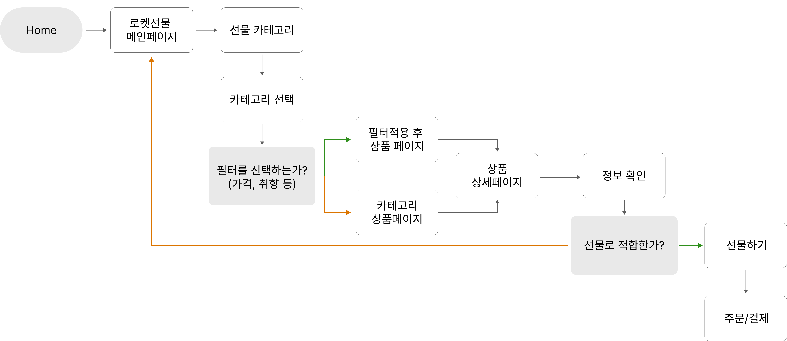
사용자 리서치에서 확인한 문제를 기능 제안에 그치지 않고, IA와 User Flow의 변화로 구체화했습니다.
04Design
앞서 정의한 탐색·선물 전달·배송 개선 방향을 화면 흐름으로 옮겼습니다
아래 화면은 공개된 쿠팡 서비스를 분석해 재구성한 제안 시안입니다. 실제 서비스에 적용된 화면이 아니며, '로켓선물'은 이 프로젝트에서 정의한 가상의 기능명입니다.
사용자 리서치와 우선순위 분석을 바탕으로, 기존 쿠팡의 사용성을 유지하면서도 선물을 고르고 전달하는 과정이 더 명확하게 느껴지도록 화면을 재구성했습니다.
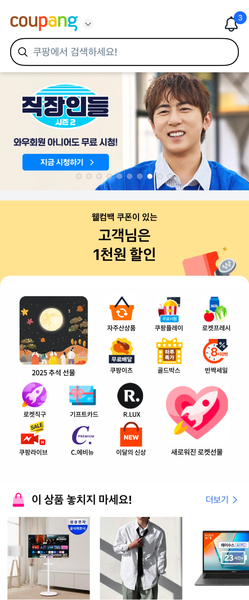
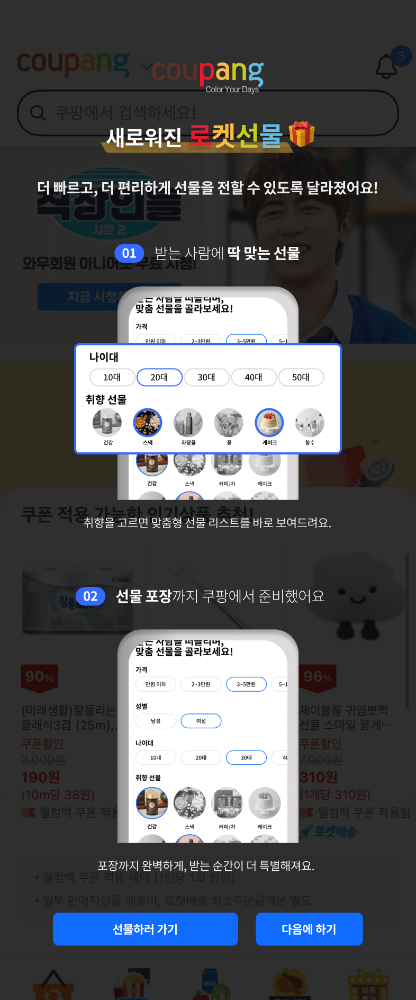
가격과 카테고리를 반복해서 오가기보다, 상황·예산·취향을 기준으로 선물을 빠르게 좁힐 수 있도록 탐색 구조를 재설계했습니다.
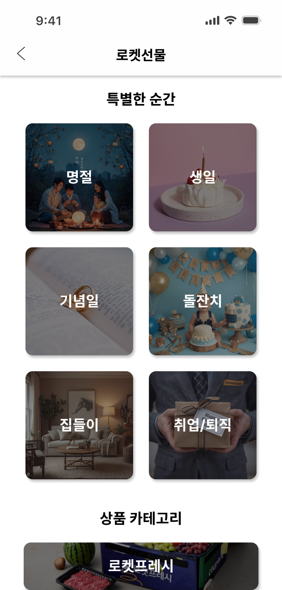
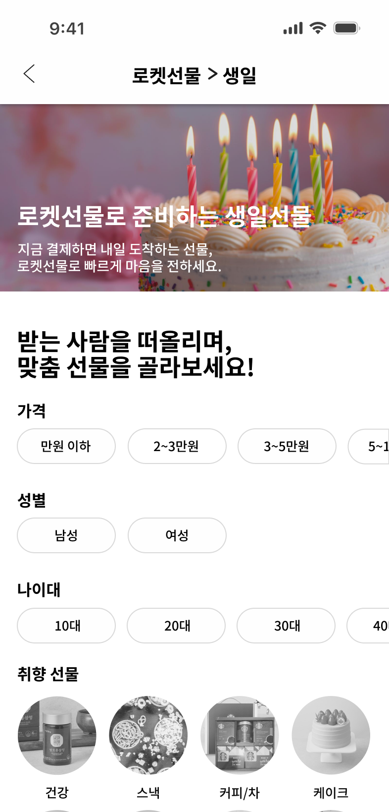
상품을 많이 보는 것보다, 조건에 맞는 선물을 빠르게 고르는 경험에 집중했습니다.
선물하기 진입 이후 메시지 카드와 선물 단계를 강화해, 현재 어떤 과정에 있는지 이해하고 상대에게 마음을 전달할 수 있도록 구성했습니다.
일반 구매 흐름과 동일하게 느껴지지 않도록, 상대에게 선물을 전하는 순간을 별도의 경험으로 설계했습니다.
배송 정보를 다시 확인할 수 있도록 하고, 잘못 입력한 경우에도 수정 경로를 쉽게 찾을 수 있도록 배송지 확인·수정 경험을 개선안에 담았습니다.
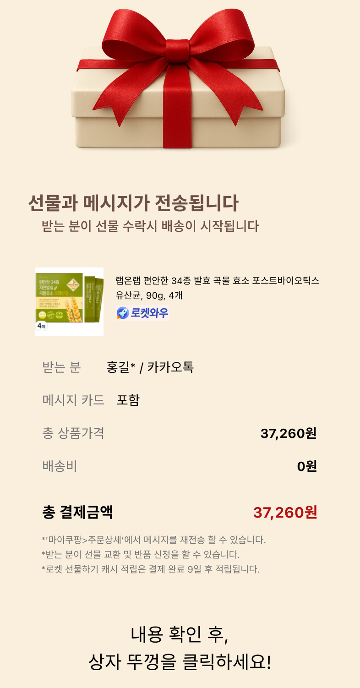
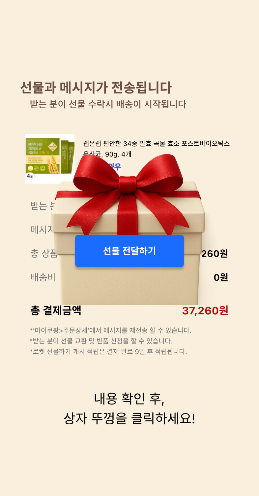
배송 오류가 발생한 뒤 해결하는 것보다, 보내기 전에 확인하고 쉽게 수정할 수 있도록 하는 것에 초점을 맞췄습니다.
05Metrics
화면을 그리기 전에, 무엇이 좋아졌다고 말할 수 있을지 먼저 정했습니다
이전 프로젝트에서는 서비스를 만들고 난 뒤에야 무엇을 측정했어야 하는지 알게 됐습니다. 그래서 이번에는 프로토타입 완성 자체를 성과로 보지 않고, 개선안이 실제 사용자 경험에 어떤 변화를 만드는지 확인할 수 있도록 핵심 지표를 먼저 설정했습니다.
선물 탐색부터 전달까지의 경험에 대한 만족도와 추천 의향을 확인합니다.
선물하기 시작부터 최종 전달까지 어느 단계에서 이탈하는지 확인합니다.
탐색·추천 개선 후 확신을 갖고 첫 상품을 선택하기까지 걸리는 시간이 줄어드는지 확인합니다.
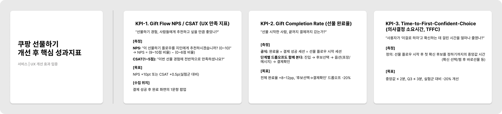
실제 서비스에 적용하지 못해 지표 변화까지 측정하지는 못했지만, 개선 효과를 검증할 기준까지 정의했습니다.
06Reflection
검증하지 못한 것이 무엇인지도 함께 남깁니다
경쟁 서비스 분석에서 시작해 사용자 리서치, 가설 검증, 우선순위 설정, IA와 User Flow, 프로토타입까지 하나의 흐름으로 이어갔습니다. 다만 그 과정에서 확인하지 못한 것도 분명했습니다.
다섯 명의 사용성 테스트로 문제가 존재한다는 것은 확인했지만, 그 문제가 전체 사용자에게 얼마나 광범위한지는 이 표본으로 말할 수 없었습니다.
성과지표까지 정의했지만 실제 서비스 적용과 A/B Test까지 진행하지 못해, 개선안이 행동 지표에 어떤 변화를 만드는지는 검증하지 못했습니다. 기준을 세우는 것과 그 기준으로 결과를 확인하는 것은 다른 단계였습니다.
문제 범위를 더 빠르게 좁히고, 핵심 가설에 집중한 실험부터 설계하겠습니다. 다섯 개의 가설을 모두 검증하기보다 가장 영향이 큰 하나를 깊게 확인하는 편이 나았을 것입니다.
인터뷰뿐 아니라 퍼널·이탈률과 같은 행동 데이터를 함께 활용하고, 프로토타입 사용성 테스트와 A/B Test를 통해 개선 전후의 변화를 실제 지표로 검증하는 단계까지 이어가겠습니다.
좋은 기획은 많은 기능을 제안하는 것이 아니라, 문제를 근거로 정의하고 검증 가능한 해결책으로 좁혀가는 과정이라는 것을 배웠습니다.